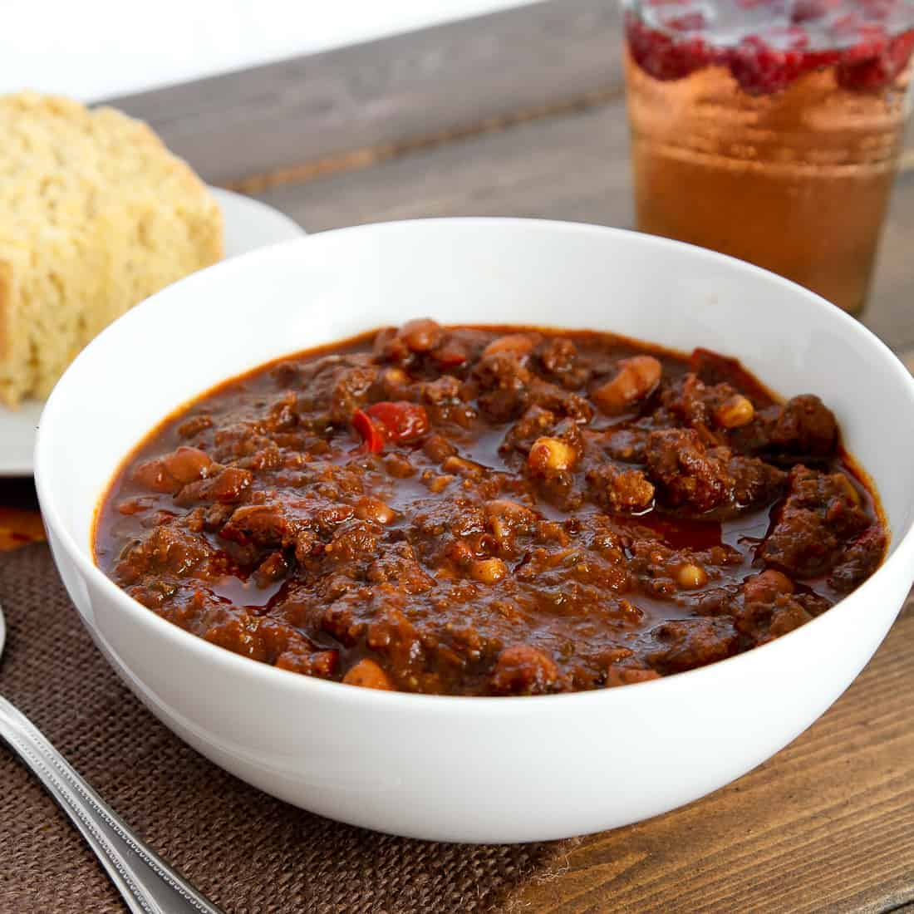

Texas Chilli

Description
Texas Chili is a legendary and robust dish that embodies the bold and hearty flavors of Texas cuisine.
This chili is known for its deep, smoky flavors and spicy kick. To make Texas Chili, start by browning
chunks of beef, such as chuck roast or brisket, in a large pot or Dutch oven over medium-high heat.
Once the beef is browned, remove it from the pot and set it aside. In the same pot, sauté diced onions,
garlic, and bell peppers until they become soft and fragrant.
Return the beef to the pot and add in a combination of beef broth, crushed tomatoes, tomato paste,
and a blend of spices like chili powder, cumin, paprika, cayenne pepper, oregano, and salt.
Stir everything together and bring the mixture to a simmer. Cover the pot and let it cook for a few
hours on low heat, allowing the flavors to meld together and the beef to become tender. Throughout the
cooking process, check the chili and add more liquid if needed.
For authenticity, traditional Texas Chili does not include beans, but you can certainly add them
if desired. Once the chili has thickened and the beef is melt-in-your-mouth tender, it's ready to be
served. Ladle the piping hot Texas Chili into bowls and garnish with toppings like shredded cheese,
chopped onions, jalapeños, and a dollop of sour cream. This hearty and spicy chili is perfect for
chilly evenings or gatherings with friends, and it's sure to satisfy your cravings for bold Texan
flavors.
Ingredients
- 2 ounces dried chile peppers (such as pastilla, guajillo, New Mexico chiles, and California chiles
- 4 cups of hot water
- 1 tablespoon of finely chopped chiptole pepper in adobo sauce (about2 peppers)
- 1 tablespoon canola oil
- 4 lbs boneless beef chuck roast, trimmed of excess fat, cut into 3/4-inch cubes
- 2 teaspoons kosher salt
- 1 teaspoon freshly ground black pepper
- 1 small chopped yellow onion
- 3 cloves garlic, minced
- 1 teaspoon ground cumin
- 1/8 teaspoon ground cinnamon
- 1 1/2 cups water, divided
- 2 tablespoons masa harina
- 4 cups beef stock
- 2 bay leaves
- 1 tablespoon white vinegar
- 1 tablespoon dark brown sugar
- sour cream for serving, to taste
- 1 lime, cut into wedges for serving
Steps
-
Gather all ingredients.
-
Place peppers in a large skillet and heat over medium-low heat; cook, turning once, until lightly
toasted and fragrant, 2 to 3 minutes per side. Transfer chiles to a bowl and cover with hot water;
let stand for 30 minutes.
-
Drain chiles, reserving about 1/2 cup of the soaking water. Use a paring knife to slice open each
pepper, and remove and discard stems and seeds by running under a gentle stream of tap water.
-
Combine chiles, chipotle pepper, and reserved 1/2 cup water in a blender; blend until a smooth paste
forms, 15 to 30 seconds. Set aside.
- Heat oil in a Dutch oven over medium-high heat. Toss beef cubes in a large bowl with salt and
pepper until evenly coated. Add half of the beef to the Dutch oven and cook, stirring occasionally
to brown most sides, about 3 minutes per side. Transfer to a large plate. Repeat with remaining
beef.
-
Add onions and garlic to drippings in Dutch oven and cook, stirring constantly, until soft and
translucent, 3 to 4 minutes. Add cumin and cinnamon, and cook, stirring constantly, until darkened and
fragrant, about 1 minute.
-
Add blended chili paste and cook, stirring constantly, for 1 minute.
-
Add 1/4 cup of the water and masa harina, whisking until incorporated to avoid lumps.
Add stock and remaining 1 1/4 cups water and stir to combine.
-
Add bay leaves and reserved beef and bring to a simmer over medium-high. Reduce heat to maintain a
very low simmer and cook, partially covered, stirring occasionally, until liquid is thickened, about
2 hours. Stir in brown sugar and vinegar.
-
Remove from heat and let stand for 20 minutes before serving warm with sour cream and lime wedges.